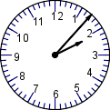

In Swahili, we negate the personal pronoun markers in the verb as well as the tenses. Remember that we have 3 personal pronouns both in singular and plural.
Zoezi I: Personal Pronoun Markers
Fill out the table below of Swahili pronouns and their markers while using the verb soma and any tenses such that you end up marking the pronoun/subject and tense markers in the verb soma.
Kiwakilishi/Personal Pronoun
Umoja/Singular
Wingi/Plural
1st
2nd
3rd
Zoezi II: Nyakati za Kiswahili
Unakumbuka nyakati gani za Kiswahili? /Which Swahili tenses do you remember?
Vikanushi katika Swahili/Negators in Swahili
We shall derive the negators from the jambo greetings across all the three persons both in singular and plural.
Kiwakilishi/Personal Pronoun
Umoja/Singular
Wingi/Plural
1st
Mimi Sijambo
Sisi hatujambo
2nd
Wewe hujambo
Nyinyi hamjambo
3rd
Yeye hajambo
Wao hawajambo
The negators for each personal pronoun are shown in red in the table above. Note that in plural form, the negator precedes the subject markers that are shown in blue.
We shall now negate the different Swahili tenses that we have learned so far.
Negating the past tense (-li-)
When negating the past tense, the tense marker, -li- changes into -ku-. Thus, -ku- occupies the slot that -li- occupies in affirmative sentences. See the examples below.
Kiwakilishi/Personal Pronoun
Umoja/Singular
Wingi/Plural
1st +ve
-ve
Mimi niliandika insha
Mimi sikuandika insha
Sisi tuliandika insha
Sisi hatukuandika insha
2nd +ve
-ve
Wewe uliandika insha
Wewe hukuandika insha
Nyinyi mliandika insha
Nyinyi hamkuandika insha
3rd +ve
-ve
Yeye aliandika insha
Yeye hakuandika insha
Wao waliandika insha
Wao hawakuandika insha
Zoezi III: Kukanusha Wakati Uliopita
Kanusha sentensi hizi katika vikundi vya watu wawili wawili kuhusu shughuli za wikendi.
Mimi nilienda filamuni pamoja na rafiki yangu.
Wewe ulicheza michezo ya video peke yako.
Yeye alitembelea mji wa Chicago kwa treni.
Sisi tulitembea karibu na Ziwa Michigan.
Nyinyi mlisoma maktabani.
Wao walipika chakula cha jioni.
Negating the present tense (-na-)
To understand how the negation involving the present tense works, write down any 10 Swahili verbs that you know below.
Zoezi IV: Vitenzi vya Kiswahili
What have you noticed about the verbs that you have written above?
Swahili is a bantu language and for this reason, many verbs end with -a. However, Swahili has borrowed some verbs from other languages such as Arabic. Such borrowed verbs do not end with -a. Examples of such verbs include safari/travel, jaribu/try, tafsiri/translate, etc.
The final vowel, -a, in the affirmative form changes into -i in the negative form. However, if the verb does not end with an -a in its affirmative form, the final vowel does not change in the negative form. See the examples below.
Kiwakilishi/Personal Pronoun
Umoja/Singular
Wingi/Plural
1st +ve
-ve
Mimi ninaandika insha
Mimi siandiki insha
Sisi tunaandika insha
Sisi hatuandiki insha
2nd +ve
-ve
Wewe unaandika insha
Wewe huandiki insha
Nyinyi mnaandika insha
Nyinyi hamuandiki insha
3rd +ve
-ve
Yeye anaandika insha
Yeye haandiki insha
Wao wanaandika insha
Wao hawaandiki insha
Zoezi V: Kukanusha Wakati Uliopo
Kanusha sentensi zifuatazo kuhusu shughuli za kila siku.
Mimi ninaamka mapema kila siku.
Wewe unaenda chuoni kwa basi.
Yeye anasoma Swahili.
Sisi tunasikiliza muziki jioni.
Nyinyi mnafanya mazoezi wikendi.
Wao wanapika chakula kitamu.
N.B. the habitual tense, hu- is negated the same way the present tense is negated. This is because the -na- tense can serve two purposes depending on the context, either as a present tense or habitual tense.
Zoezi VI: Kukanusha Wakati wa Mazoea
Kanusha sentensi zifuatazo kuhusu shughuli za kila siku
Mimi hucheza karata kila jioni.
Wewe huenda chuoni kwa baiskeli.
Yeye husoma maktabani mchana.
Sisi hutazama televisheni kabla ya kulala.
Nyinyi humtembeza mbwa asubuhi.
Wao huoga baada ya kusoma.
Negating the future tense (-ta-)
The future tense is the easiest to negate because you just need to insert the negator. See the examples below.
Kikwakilishi/Personal Pronoun
Umoja/Singular
Wingi/Plural
1st +ve
-ve
Mimi nitaandika insha
Mimi sitaandika insha
Sisi tutaandika insha
Sisi hatutaandika insha
2nd +ve
-ve
Wewe utaandika insha
Wewe hutaandika insha
Nyinyi mtaandika insha
Nyinyi hamtaandika insha
3rd +ve
-ve
Yeye ataandika insha
Yeye hataandika insha
Wao wataandika insha
Wao hawataandika insha
Zoezi VII: Kukanusha Wakati Ujao
Kanusha sentensi zifuatazo kuhusu mipango ya wikendi ijayo.
Mimi nitaenda kumtembelea kakangu katika jimbo la Florida.
Wewe utasafiri Afrika Mashariki.
Yeye atacheza besiboli chuoni.
Sisi tutaogelea katika pwani ya Florida.
Nyinyi mtakula chakula cha Afrika Mashariki.
Wao watakaa katika bweni la Lincoln.
Negating the Past Perfect Tense (-me-)
The past perfect tense indicates that an action has happened a while ago. In the negative form, -me- changes to -ja-. Look at the examples shown below.
Kiwakilishi/Personal Pronoun
Umoja/Singular
Wingi/Plural
1st +ve
-ve
Mimi nimeandika insha
Mimi sijaandika insha
Sisi tumeandika insha
Sisi hatujaandika insha
2nd +ve
-ve
Wewe umeandika insha
Wewe hujaandika insha
Nyinyi mmeandika insha
Nyinyi hamjaandika insha
3rd +ve
-ve
Yeye ameandika insha
Yeye hajandika insha
Wao wameandika insha
Wao hawajaandika insha
Zoezi VIII: Kukanusha Hali Timilifu
Kanusha sentensi hizi kuhusu shughuli za kila siku
Mimi nimechoka sana.
Wewe umelala mapema.
Yeye ameenda chuoni.
Sisi tumerudi nyumbani.
Nyinyi mumefurahi sana leo.
Wao wamekwea mlima mrefu.
2. Saa katika Swahili/Time in Swahili
Utangulizi/Introduction
The East African countries are located along the equator. In fact, the equator divides Kenya into almost two equal halves. Because of this, East African countries experience almost equal hours of daylight and night throughout the year. Thus, there are 12 hours of daylight and 12 hours of night time. For this reason, the Swahili clock differs from the western clock in that, whereas the western day starts counting at midnight, the Swahili day starts counting at 6 am when the sun rises. Hence, 7 am becomes 1 hour after sunrise. Please see the pictures shown below.
Ramani ya Afrika/Map of Afrika
Image result for equator line in east africa
Saa ya Kiswahili
Clock
The time shown inside the clock refers to the western time while the time shown outside the clock refers to the East African time. Depending on the time of the day: asubuhi, mchana, jioni, or usiku, you could read the time shown above in swahili either as:
Ni saa nne kamili asubuhi au
Ni saa nne kamili usiku.
Msamiati wa Saa/Time Vocabulary
Ni saa
the time is
na dakika x
x minutes past
robo
quarter
nusu
half
Kamili
on the dot
Kasoro dakika
minutes to
kutoka
from
hadi
to
mpaka
until
Anza
start
maliza
finish
acha
stop
pumzika
rest
Mapema
early
chelewa
to be late
muda
time/duration
mnamo
on
Kawaida
usually
mara kwa mara
occasionally
wakati wa
time of
chukua
take
Amka
wake up
tayarisha
prepare
starehe
relax
lala
sleep
Mfano/Example
Swali: Ni saa ngapi?/What is the time?
Jibu: Ni saa X kamili, ni saa x na dakika y, ni saa x kasorobo, ni saa x kasoro dakika y, au
Sasa hivi ni saa/the time right now is ...
Zoezi I: Ni saa ngapi?(what is the time?)
1. ____________________
2. ____________________
3. ____________________
4. ____________________
5. ____________________
6. ____________________
7. ____________________
8. ____________________
9. ____________________
Zoezi II: Ni saa ngapi?
 A. ____________________
B. ____________________
C. ____________________
D. ____________________
E. ____________________
F. ____________________
G. ____________________
H. ____________________
I. ____________________
J. ____________________
Zoezi III: Shughuli za Kila Siku
Katika vikundi vya watu wawili, mwambie mwenzako unapofanya shughuli hizi/in pairs, tell your friend when you perform the following tasks.
Je, kawaida wewe huamka saa ngapi?
Je, unakula chakula cha asubuhi lini?
Je, unaenda chuoni saa ngapi?
Je, wewe hula chakula cha mchana lini?
Je, unarudi nyumbani saa ngapi?
Kawaida wewe hula chakula cha jioni saa ngapi?
Je, wewe hulala lini?
Je, madarasa yako robo hii ni saa ngapi?
Kawaida wewe husoma kutoka saa ngapi hadi saa ngapi jioni?
Zoezi IV: Kutunga sentensi
Tunga sentensi kumi kwa kutumia msamiati wa saa uliopewa hapo juu/Compose 10 sentences using any 10 time-related vocabulary that you are given above.
Zoezi V: Saa na Utamaduni
Utamaduni wa Afrika Mashariki na Nchi Yako kuhusu Saa/East African vs. your country’s culture on Time. Tumia mtandao/internet kwa zoezi hili.
Je, watu katika nchi yako hula chakula cha asubuhi saa ngapi? Na je, watu wa Afrika Mashariki hula chakula cha asubuhi lini?
Je, watoto katika nchi yako huenda shuleni saa ngapi? Je, watoto wa Afrika Mashariki huenda shuleni saa ngapi?
Kawaida watu katika nchi yako hula chakula cha mchana saa ngapi? Je, watu katika Afrika Mashariki hula chakula cha mchana lini?
Kawaida watu katika nchi yako hula chakula cha Usiku lini?
Je, watu katika nchi yako hunywa chai au kahawa lini? Watu wa Afrika Mashariki hunywa chai kila wakati!
Zoezi VI: Kuuliza Maswali Kuhusu Saa
Je, ulisoma kwa masaa mangapi?
Ulienda filamuni lini?/saa ngapi?
Ulisafiri kwa masaa mangapi?
Darasa la Swahili ni kutoka saa ngapi hadi saa ngapi?
Je, meza ya lugha ni lini?/saa ngapi?
Ulicheza mchezo wa video kwa muda gani?
Kawaida wewe hufanya mazoezi kwa muda gani?
Karamu itaanza saa ngapi?/lini?
Karamu itaisha saa ngapi?/lini?
3. Siku za Wiki/Juma – Days of the Week
Utangulizi/Introduction
The swahili speakers had interacted with the Arabs for nearly 400 years before the arrival of the europeans in the 19th Century. For this reason, the Arabic culture has had an influence on the Swahili culture and language. A good example of this is on the Swahili days of the week. Friday is considered as the last day of the week and it is the day of worship in Islam. Thus, Saturday becomes the first day of the week. East African Muslims go to the mosque (msikiti) on Friday but their Christian counterparts go to church (kanisa) on Sunday. Owing to this diversity, the East Africans follow the western calendar for their economic activities. Thus, the workdays are Monday through Friday.
Siku za Wiki/Juma
Days of the Week
Zoezi I: Kuzungumza Kuhusu Siku za Wiki
Weber Arch
Swali: Je, wewe unaenda chuoni siku gani?
Jibu: Kawaida mimi huenda chuoni siku tatu kwa wiki: Jumatatu, Jumatano, na Ijumaa. Na wewe je?
Swali: Je, una madarasa mangapi kila wiki?
Jibu: mimi nina madarasa tisa robo hii: madarasa matatu Jumatatu, matatu Jumatano, na matatu Ijumaa. Na wewe je, una madarasa mangapi robo hii?
Je, leo ni siku gani?/Ni siku gani leo?
Unaweza kujibu kwa kusema:
Swali: Ni siku gani leo?
Jibu: i. Ni Jumatano.
ii. Leo ni Jumatano.
iii. Leo ni siku ya Jumatano.
Zoezi II: Hizi ni siku gani?
Juzi ilikuwa siku gani?
Jana ilikuwa siku gani?
Leo ni siku gani?
Kesho itakuwa siku gani?
Kesho kutwa itakuwa siku gani?
Sarufi/Grammar
Ni = is
Ilikuwa = it was
Itakuwa = it will be
Zoezi III: Marudio ya Nyakati/Review of Tenses
Fill the table of pronouns and tenses given below
Pronoun
Kila siku (-hu-)
Jana (-li-)
Leo (-na-)
Kesho (-ta-)
Mimi +ve
-ve
hukimbia
Wewe +ve
-ve
Ulifanya mazoezi
Yeye +ve
-ve
Haendi dukani
Sisi +ve
-ve
Tutapiga picha
Nyinyi +ve
-ve
hamkusoma
Wao +ve
-ve
hawapiki
Zoezi IV: Kuzungumza kuhusu wikendi (wanafunzi wawili wawili)
Swali: Je wewe utafanya nini wikendi?
Ijumaa jioni
Jumamosi
Jumapili
Kalenda – Januari 2020
Jumapili
Jumatatu
Jumanne
Jumatano
Alhamisi
Ijumaa
Jumamosi
1
2
3
4
5
6
7
8
9
10
11
12
13
14
15
16
17
18
19
20
21
22
23
24
25
26
27
28
29
30
31
Kusema tarehe/date
Katika Afrika Mashariki, watu husema/huandika tarehe hivi: siku/mwezi/mwaka. Kwa mfano
Swali: leo ni tarehe ngapi/gani?
Jibu: leo ni 30/1/2020 (tarehe thelathini, mwezi wa Januari, mwaka wa elfu mbili na ishirini)
Zoezi V: Kusema tarehe (watu wawili wawili)
Swali: Leo ni tarehe gani?
Jibu:
Swali: Jana ilikuwa tarehe gani?
Jibu:
Swali: Kesho itakuwa tarehe gani?
Jibu:
Swali: Jumamosi itakuwa tarehe gani?
Jibu:
Zoezi VI: Kuandika Ratiba/schedule
Scenario: Your imaginary host family in East Africa would like to have a sample of your weekly schedule so that they can prepare to host you during your summer Swahili study abroad program. Use the table below to prepare your sample weekly schedule. Mention at least three activites per day.
Ratiba ya Wiki
Siku ya wiki
Tarehe
Shughuli/Activities
4. Miezi/Months
Kuna njia mbili za kutaja miezi katika Swahili kama ifuatavyo
/1. Januari
Mwezi wa Kwanza
2. Fubruari
Mwezi wa pili
3. Machi
Mwezi wa tatu
4. Aprili
Mwezi wa nne
5. Mei
Mwezi wa tano
6. Juni
Mwezi wa sita
7. Julai
Mwezi was saba
8. Agosti
Mwezi wa nane
9. Septemba
Mwezi wa tisa
10. Oktoba
Mwezi wa kumi
11. Novemba
Mwezi wa kumi na moja
12. Disemba
Mwezi wa Kumi na mbili
Msamiati kuhusu miezi/Vocabulary related to months
Sikukuu
holiday
sherehe
celebration
sherehekea
celebrate
Kila
every
kawaida
usually
mara kwa mara
occasionally
Tarehe
date
mnamo
on
siku ya kuzaliwa
birthday
Zawadi
gift
keki
cake
kata
cut
Wakati wa
the time of
karamu
party
fanya au kuwa na karamu
have a party
Timiza au fikisha
attain
umri
age
mwaka
year
Kadi
card
maua
flowers
sikukuu kipenzi
favorite holiday
Zoezi I: Sikukuu Marekani
Je hizi ni sikukuu gani na husherehekewa mwezi/tarehe gani?
Sikukuu
Jina la Sikukuu
Mwezi/ Tarehe
Zoezi II: Kusema kuhusu sikukuu yako kipenzi
Sikuu yako kipenzi ni gani?
Sikukuu yako kipenzi ni mwezi gani?
Sikuu yako kipenzi ni tarehe gani?
Kawaida unafanya nini kusherehekea sikukuu yako kipenzi?
Zoezi III: Kusema kuhusu siku yako ya kuzaliwa
Je, wewe ulizaliwa mwezi gani?
Ulizaliwa tarehe gani?
Je, ulizaliwa mwaka gani?
Kwa hiyo tarehe yako ya kuzaliwa ni gani?
Sasa una miaka mingapi?
Kawaida wewe hufanya nini kusherehekea siku yako ya kuzaliwa?
Je, watu katika familia yako walizaliwa lini?
Babangu alizaliwa ____________
Mamangu alizaliwa ___________
Dadangu alizaliwa ______________
Kakangu alizaliwa _______________
Mbwa au paka wangu alizaliwa _______________________
Katika Afrika Mashariki, watu wengi ni wakulima. Kwa hiyo, watu hupata mboga na matunda kutoka mashambani. Pia, watu hununua mboga na matunda sokoni. Kuna masoko ya vyakula kama mboga, matunda, na nafaka na masoko ya nguo. Pia, kuna masoko ambayo yanauza vyakula na nguo pamoja. Katika baadhi ya sehemu, kuna siku za soko katika juma/wiki, lakini kuna masoko ambayo yanafunguliwa kila siku. Je, unakumbuka siku za juma?
Zoezi I: Soko la Vyakula
Katika picha hizi, tunaona mboga na matunda mbalimbali katika soko la vyakula. Tumia kamusi yako ya Kiswahili/Kiingereza kutaja majina ya mboga na matunda katika picha hizi.
Picha ya soko la vyakula katika mji wa Ruaka, KenyaPicha ya soko la vyakula katika mji wa Ruaka, KenyaPicha ya soko la vyakula katika mji wa Ruaka, Kenya
Mboga Matunda ——- ———
Zoezi II: Mboga na Matunda katika Familia Yangu
Katika vikundi vya watu wawili wawili, sema watu katika familia yako wanapenda mboga na matunda gani.
Je, familia yako inapenda mboga gani?
Mamangu hupenda ...
Je, familia yako inapenda matunda gani?
Kakangu anapenda ...
Noun Classes in Swahili and Fruits and Vegetables
In Swahili, all the nouns belong to specific noun classes. Thus, noun classes in Swahili determine whether the sentence is grammatical or not. We will use the different fruits and vegetables that you have identified in the pictures above to practice how to form grammatical sentences in Swahili by observing the rules of different noun classes.
Generally speaking, nouns are categorized both in their singular and plural forms. The only noun class that is predictable is that of animates (M/WA). We have already looked at a few examples of the nouns belonging to the noun class of animates.
Here, we shall focus on the following elements/components of a Swahili sentence: Noun Class (NC), Noun Class Marker (NCM), Noun (N), Adjective (ADJ), and Verb (V). See the table below
Zoezi III
Complete the table below of food items belonging to different noun classes. Note that the verb takes the subject marker (NCM) + Tense Marker (TM) + Verb (V). The adjectives of quantity and quality are marked by the Noun Class (NC) markers with exception to JI/MA in singular form. Also, there is a lot of variation in marking adjectives belonging to N/N noun class.
NC
NCM
Noun
Quantity
Other adjectives
-zu ri/-baya,; -tam u/-chungu; -refu/fupi
Verb
M
WA
a-
samaki
1 Mmoja
mzuri
kaangwa /being fried amekaangwa
Wa-
Samaki
2Wawili
wazuri
wamekaangwa
M
MI
u-
mchungwa
1Mmoja
mrefu
anguka /fall umeanguka
i-
3
1
Miembe
4
pendeza / be attractive
mnazi
1
katwa/ to be cut
5
mdalasini
1
kauka/dry
6
1
mikate
7
nunuliwa/ to be bought
JI
MA
li-
tunda
1moja
tamu
iva/ be ripe litaiva
Ya-
matunda
8manane
matamu
yataiva
1
mananasi
9
anguka / fall
parachichi
1
oza/rot
10
1
maboga
2
chogwa
to be curved
Maji
nywewa
Maziwa
Chemka/ boil
KI/CH
VI/VY
ki
chakula
1kimoja
kizuri
iva/ get ready kiliiva
vi
vyakula
2viwili
vizuri
viliiva
kinywaji
1
mwagwa/ to be spilled
3
ki
kijiko
1kimoja
kidogo
kimepotea
vi
Vijiko
4Vinne
vidogo
potea
get lost
vimepotea
Kikombe
1
anguka/ fall
5
N
N
i-
zabibu
1moja
Chu ngu/bitter
liwa/ to be eaten italiwa
Zi-
zabibu
6sita
Chu ngu/bitter
zitaliwa
1
kabeji
7
pikwa/ to be cooked
karoti
1
nunuliwa/ to be bought
8
1
Soda
9
mwagika/ get spilled
U
N
Uteo
1
patikana/ to be found
Teo
2
U
U
uyoga
1
mkubwa
haribika/ get bad
ugali
iva/ get ready/ cooked
Sokoni
Sokoni is a social place where people meet, greet, and have general conversations about what the seller has, what the buyer wants, and how much the items cost. Items at many market places do not have price tags and for that reason, there is always room for bargaining. Thus, we shall learn three important skills that you may require when buying items at the market: inquiring the prices of the food items, bargaining, and requesting the items.
Msamiati wa Sokoni/Marketplace Vocabulary
Muuzaji
seller
mnunuzi
mteja
kastoma
buyer
nunua
buy
Uza
sell
bei
price
ghali
expensive
Rahisi
cheap
punguza
lower
ongeza
add
Tafadhali
please
nina
I have
sina
I do not have
Agiza
order
fungu
bunch
bidhaa
items
Hitaji
require
naomba
May I have
nataka
I want
Nipatie
give me
Jumla
total
shilingi
shilling
pesa
money
Kuuliza bei/Inquiring the prices
Kuna njia tatu za kuuliza bei.
X ni bei gani?
X ni shilingi ngapi?
Unauzaje X
Kuagiza/ordering or requesting for the items
Kuna njia tatu za kuagiza bidhaa.
Ninaomba X moja, mbili, tatu ...
Ninataka X mmoja, miwili, mitatu ...
Nipatie X kimoja, viwili, vitatu ...
Note that you can substitute X with different food items and the adjectives of quantity will change depending on their noun classes
Mazungumzo I
Muuzaji: Hujambo Kastoma!
Kastoma: Sijambo, bwana! Habari za mchana?
Muuzaji: Salama. Karibu katika kibanda changu. Nikuuzie nini leo?
Muuzaji: Bei ya machungwa ni matatu kwa shilingi tisini.
Kastoma: Safi. Nitahitaji fungu moja la ndizi na machungwa matatu.
Muuzaji: Jumla ni shilingi mia moja na tisini.
Kastoma: Hizi hapa pesa.
Muuzaji: Asante sana. Hivi hapa vitu vyako.
Kastoma: Asante sana. Kwaheri.
Muuzaji: Kwaheri na karibu tena.
Zoezi IV: Mazungumzo ya Sokoni
In pairs, follow the example of the dialogue given above to practice to inquire the prices of different fruits and vegetables from the pictures that you used ealier in the unit as well as requesting them by mentioning the number of items that you require. One of you should play the role of the seller while the other plays the customer’s role. You may want to switch the roles such that each of you practices to play both roles.
Kupatana Bei/Agreeing on the Price
Often times, items at the open air markets do not have price tags. For this reason, you must learn how to bargain to have the prices of the items reduced for you. However, the bargaining should be reasonable. For instance, you could ask the seller to reduce by 30 shillings if an item is being sold at 100 shillings.
Mazungumzo II
Muuzaji: Karibu karibu karibu, Kastoma!!! Machungwa, maembe, ndizi, na kabeji kwa bei rahisi!
Kastoma: Hujambo! Unauzaje nyanya?
Muuzaji: Sijambo, dada! Karibu sana. Nyanya ni shilingi mia mbili kwa kila fungu.
Kastoma: Lo! Ni ghali sana. Punguza bei tafadhali.
Muuzaji: Nyanya zangu ni freshi kabisa na kubwa, dada.
Kastoma: Ndiyo, lakini sina shilingi mia mbili. Nina shilingi mia moja na hamsini.
Muuzaji: Ongeza shilingi thelathini.
Kastoma: Sina shilingi thelathini lakini ninaweza kutoa shilingi mia moja na sabini.
Muuzaji: Sawa, nipatie shilingi mia moja na sabini.
Kastoma: Asante sana. Pesa hapa.
Muuzaji: Nyanya zako hapa. Asante na karibu tena.
Kastoma: Kwaheri!
Zoezi V: Mazungumzo ya Kupatana Bei
In pairs, follow the example of the dialogue given above to practice to inquire the prices of different fruits and vegetables from the pictures that you used ealier in the unit as well as bargaining to have their prices reduced. One of you should play the role of the seller while the other plays the customer’s role. You may want to switch the roles such that each of you practices to play both roles.
6. Vyakula na Vinywaji/Food and Drinks
Msamiati/Vocabulary
Chakula
food
kula
to eat
pika
cook
mpishi
cook
Oka
bake
chemsha
boil
kaanga
fry
choma
roast
-bichi
raw
-bivu
ripe
tayari
ready
tayarisha
prepare
Taka
want
hitaji
require
kutoka
from
hadi
to
Nunua
buy
menya
peel
chambua
sort
kata
cut
uma
bite
Tamu
sweet
chachu
sour
viungo
spices
Hapa kuna picha za vyakula kutoka Afrika Mashariki. Mwalimu/rafiki atakwambia majina ya vyakula hivi kwa Kiswahili.
Tumia kamusi yako kuangalia majina ya vyakula vingine ambavyo haviko kwenye picha/Use your dictionary to look up the names of other types of food not included in the pictures above.
Vinywaji Maarufu Afrika Mashariki
Hapa kuna picha za vinywaji maarufu Afrika Mashariki (Insert pictures)
Zoezi II: Majina ya Vinywaji
Tumia kamusi yako kuangalia majina ya vinywaji vingine ambavyo haviko kwenye picha/Use your dictionary to look up the names of other types of drinks not included in the pictures shown above.
Zoezi III: Vyakula na Vinywaji katika Familia Yangu
Je, familia yako inapenda vyakula na vinywaji gani?
Je, wewe unapenda chakula na vinywaji gani kwa:
Chakula cha asubuhi
Chakula cha mchana
Chakula cha jioni/usiku
Zoezi IV: Familia ya Afrika Mashariki
Your host family in East Africa would like to know your preferences for food/drinks at different times of the day for them to prepare for your arrival. Fill out the following table by mentioning three types of food/drinks/fruits for each time of the day and indicate the time of the day that you usually have that meal.
Time of the day
Saa ngapi?
Vyakula/vinywaji/matunda
Zoezi V: Kazi ya Vikundi
Work in pairs to fill out the venn diagrams shown below with your preferences for different types of food/drinks/fruits at different times of the day. In the intersection of each venn diagram, list what both of you have in common.
Chakula cha asubuhi
Chakula cha asubuhi
Chakula cha mchana
Chakula cha mchana
Chakula cha jioni/usiku
Chakula cha jioni/usiku
Zoezi VI: Chakula Changu Kipenzi
Je, wewe unapenda chakula gani zaidi?
Je, unahitaji nini kupika chakula hiki?
Zoezi VII: Kutunga Sentensi
Tunga sentensi kwa kutumia maneno 10 uliyojifunza katika mada hii/Construct 10 sentences using any 10 words that you have learned in this topic
7. kahawani au Mgahawani/At the Restaurant
Menu
Hapa chini, kuna menu ya Mkahawa wa Kilimanjaro uliopo jijini Nairobi.
Menu PageMenu PageMenu PageMenu PageMenu PageMenu Page
Msamiati wa Mkahawani/Restaurant Vocabulary
Mhudumu
attendant
mteja
customer
menu
menu
agiza
order
meza
table
kiti
seat
keti
sit down
nawa
wash hands
msalani
bathroom
ndani
inside
Nje
outside
barazani
balcony
kinywaji
drink (N)
kunywa
drink (V)
Kinywaji baridi
cold drink
kula
eat
kinywaji moto
hot drink
beba
carry
funga
wrap
lete
bring
hisi njaa
feel hungry
hisi kiu
feel thirsty
Mazungumzo I: Kununua Chakula cha Asubuhi
Mhudumu: Hujambo kastoma! Habari za asubuhi?
Kastoma: Sijambo, asante. Salama. U hali gani?
Mhudumu: Salama sana. Karibu katika Kilimanjaro. Utahitaji meza ya watu wangapi?
Kastoma: Asante sana. Meza ya watu wawili itanifaa. Mna chakula gani cha asubuhi?
Mhudumu: Sawa. Nifuate mezani. (baada ya kuketi) Nitakupa menu uangalie vyakula vyetu vya asubuhi. Nitarudi sasa hivi.
Kastoma: Asante sana. (baada ya kuangalia menu). Mhudumu!
Mhudumu: Naam, bwana.
Kastoma: Naomba full breakfast.
Mhudumu: Safi sana. Nitakuletea baada ya dakika chache.
Mhudumu: Karibu chakula.
Kastoma: Asante sana … baada ya kula … je, ninaweza kulipa kwa M-pesa?
Mhudumu: Bila shaka. (kastoma analipa)
Kastoma: Asante sana kwa huduma nzuri sana. Nimefurahia chakula.
Mhudumu: Karibu tena. Asante kwa bakshishi (tip). Uwe na siku njema
Kastoma: Karibu na Kwaheri, uwe na siku njema pia.
Zoezi I
Jina lingine la kastoma ni gani kwa Kiswahili?
Je, kastoma alihitaji meza ya watu wangapi?
Kastoma alikula vyakula gani kwa Kiswahili?
Bei ya chakula cha asubuhi alichokula kastoma ni gani?
Kwa shilingi za Kenya?
Kwa dola za Marekani?
Wewe ungekula chakula gani cha asubuhi katika Mkahawa wa Kilimanjaro?
Tafiti mtandaoni kuhusu M-pesa ni nini?
Zoezi II: Kazi ya Vikundi
Katika vikundi vya watu wawili, fanya mazoezi ya kuagiza vyakula vya mchana/usiku katika Mkahawa wa Kilimajaro kwa Kiswahili. Tumia maneno kumi kutoka kwenye msamiati wa mkahawani uliyopewa hapo juu.
8. Rangi/Colors
Majina ya Rangi kwa Kiswahili
Rangi nyeusi
Rangi nyeupe
Rangi nyekundu
Rangi ya kijani
Rangi ya manjano
Rangi ya kijivu
Rangi ya samawati
Rangi ya waridi
Rangi ya zambarau
Rangi ya kahawia
Rangi ya machungwa
Zoezi I: Rangi katika Familia Yangu
Je, wewe unapenda rangi gani?
Familia yako inapenda rangi gani
Babangu anapenda …
Mamangu anapenda …
Dadangu anapenda …
Kakangu hupenda …
Je, una mnyama wa nyumbani?
Mnyama wako wa nyumbani ana rangi gani?
Rangi za chuo chako ni gani?
Zoezi II: Rangi za Bendera
Hii ni bendera ya ________________
Bendera ya _______ ina rangi ngapi?
Bendera ina rangi gani?
Zoezi III
Je, wewe unatoka jimbo/nchi gani?
Bendera ya jimbo lako/nchi yako ina rangi ngapi?
Bendera ya jimbo lako/nchi yako ina rangi gani?
Zoezi IV: Bendera za Afrika Mashariki?
Sema kuhusu Bendera za Afrika Mashariki zifuatazo kwa kuzingatia:
 6. ____________________
6. ____________________